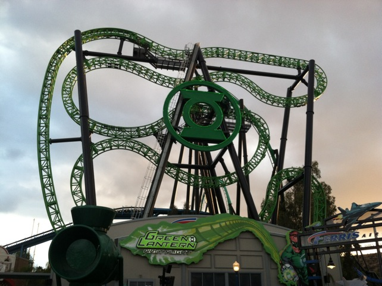

| |
Le Vipère Review

We're here at La Ronde. For today's ride, we're reviewing Le Vipère, previously known as Green Lantern at Six Flags Magic Mountain. Now I last rode this at Six Flags Magic Mountain, so we're gonna be reviewing this as Green Lantern. After getting in the seats, you pulled down your vest OTSRs, you were off. First you climbed up the lifthill. The lift hill alone was... interesting as you never really ride it straight. If you were facing the rest of the park, you got a really good view of Six Flags Magic Mountain, or hell, depending on the weight distribution, you could've just been staring up at the sky, and saw nothing but the big open blue sky. And if you were facing the other side, you got a really good view of Green Lantern, which looked HUGE from the lifthill. And you may have just been looking down at the ground, never knowing when this lifthill will ever end. But quickly, the ride crested the lifthill and you went through the predrop. This actually gave us a little bit of speed and really got us going. Now usually, you're either leaning slightly foreword, or slightly back, which makes most people slightly nervous. Now before we could start the first half, we notice that we passed through a trim which slows us down a little. But before you could say "Trims suck!!!", You swooped down that first dip and got a nice little pop of airtime! It may not be flipping much right now, but don't worry. That's normal. Yeah, Six Flags did that. You see, when Green Lantern first opened, it was AMAZING!!! We loved it when it first opened in 2011. However, Six Flags went and added Elephant Ears to make the ride stop flipping. And...yeah. This ride is MEANT to flip. So it got WAY less fun. But not only did it not get as crazy, but...when you go through those elements and don't flip, it can hurt. And...after Six Flags added the Elephant Ears, people began to HATE the ride. Even the GP began to hate the ride. Seriously, people f*cking hated that ride as if it was Gouderix or something like that. And while it wasn't THAT bad, it also was WAY less fun than when it first opened. And after comparing it to its clone, Insane @ Gröna Lund, you can see just how good this ride is supposed to be, and how badly Six Flags f*cked it up with those stupid elephant ears. Now ultimately, this was done for maintanence reasons, as the ride kept getting stuck upsidedown, and hence, add the elephant ears. If it can't flip, it can't get stuck upside down. Except, that didn't even help. The maintanence problems continued, until it was eventually SBNO in 2018, and then transferred in 2019. So ultimately, the elephant ears did nothing but make people hate the ride while it was here. Anyways, back to the review. We then went through another speed hump that doesn't do too much, but it is still...a little fun. But before you know it, you dove down through another one of those twisted drops and headed into the midcourse brakes. While we wern't upsidedown on the midcourse brakes, during a lot of my Green Lantern Rides, we were either facing the sky, or the ground here. And yep, right as we got off the midcourse brakes, we got some decent ejector air (It used to be so much better) ='(. We went through another one of those funky drops. It was fun, we got some more speed. And then we got the final hump. Something strange happened here. You actually got a flip here. Yep, this is the only part of the ride that really flipped after the addition of the Elephant Ears. Seriously, that hump was designed to make you go upsidedown. Even Six Flags' botchering of the ride couldn't stop the flips right here. And then you slam into the brake run here. Green Lantern is a ride that really pissed me off mostly because it used to be so good, but then Six Flags had to go and neuter the ride. So despite how much I loved the ride when it first opened, and how much I love its Swedish clone, I'm glad that Six Flags Magic Mountain got rid of Green Lantern. They didn't know how to properly run it. And hey. I am happy that my very last ride actually had the ride still flipping and being awesome despite the terrible elephant ears. So I'm happy that my last ride on Green Lantern was a good one. Apparently I've heard that the reason Six Flags sent this ride to La Ronde is because Canadian Law will allow them to run the ride differently than American Law. However, with the way La Ronde has operated its rides in the past, I have no hope that Le Vipère will run like Green Lantern did in its glory days (or even better, like Insane). But seriously folks, just visit Gröna Lund. Not only is Insane great, but the park kicks ass too.
5/10
Location: La Ronde
Opened at Six Flags Magic Mountain in 2011
Relocated to La Ronde in 2020
Built by: Intamin
Last Ridden: May 30, 2017
I have ridden this exact same ride at the following parks.
Gröna Lund
Green Lantern Photos





Home
|